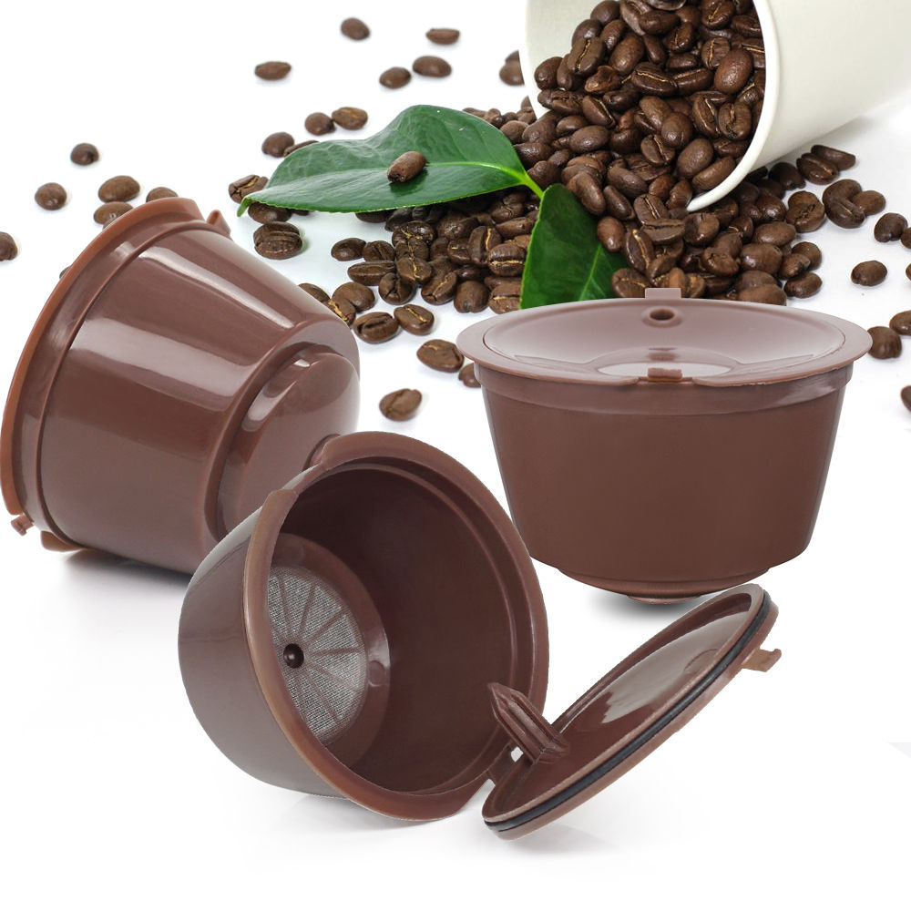

| Le café encapsulé appelée également café en dosette dans une de ses variantes, est une des solutions utilisées pour commercialiser le café, constituant à le vendre dans un emballage (capsule ou dosette souple) qui s'adapte à la machine à café. | |
|---|---|
|  |
Ces produits sont relativement récents : D'abord prévu pour les percolateurs standards (diamètre de 44 mm) l'E.S.E., inventé et breveté par Illycaffè en 1972 puis distribué et protégé par un consortium en 1998, par Briel, Euromatik, Girmi, illycaffè, Little Italy, SGL et Unic.
Puis en dosettes papier ou en capsules métalliques: par Nespresso, Lavazza en 1989, puis en 2001 avec Senseo (diamètre 66 mm) de Philips.
|